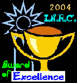

CCC OO FFFF FFFF EEEE EEEE M M U U DDD
C O O F F E E MM MM U U D D
C O O FFF FFF EEE EEE M M M U U D D
C O O F F E E M M U U D D
CCC OO F F EEEE EEEE M M UU DDD v5.7
(C) 2000 - 2012 Bo Zimmerman
) (
___...(-------)-....___
.-"" ) ( ""-.
.-'``'|-._ ) _.-|
/ .--.| `""---...........---""` |
/ / | |
| | | |
\ \ | |
`\ `\ | |
`\ `| |
_/ /\ /
(__/ \ /
_..---""` \ /`""---.._
.-' \ / '-.
: `-.__ __.-' :
: ) ""---...---"" ( :
'._ `"--...___...--"` _.'
jgs \""--..__ __..--""/
'._ """----.....______.....----""" _.'
`""--..,,_____ _____,,..--""`
`"""----"""`

< nbsp;